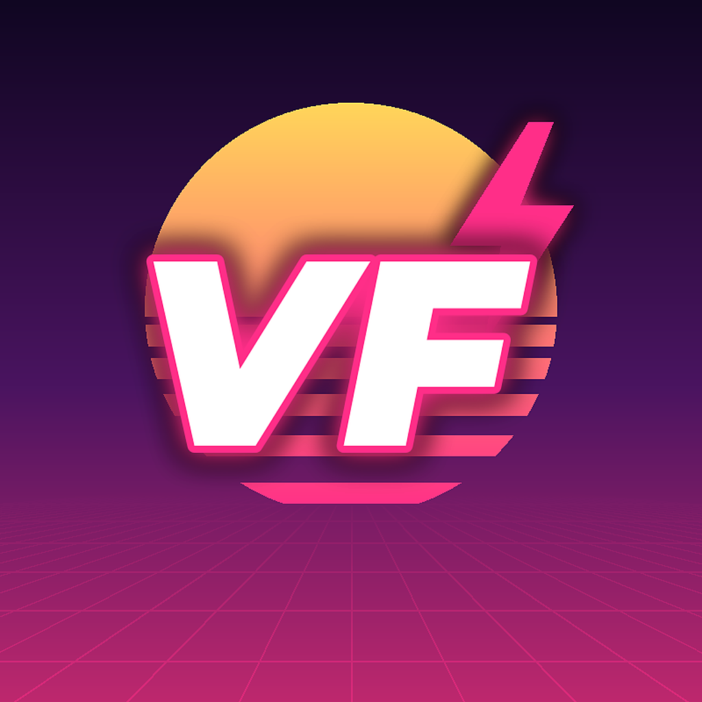

ViceFlashTerms of Service
Last updated: November 25, 2026
1. About ViceFlash
ViceFlash ("the app") is a desktop publishing tool operated by an independent creator based in France. It lets the creator upload their own short-form videos to their own TikTok account through TikTok's official Login Kit and Content Posting API.
2. Acceptance
By using the app you agree to these Terms and to TikTok's own Terms of Service, Community Guidelines and Music Usage Confirmation. If you do not agree, do not use the app.
3. Your TikTok account
You connect your TikTok account through TikTok's authorization page and can revoke this access at any time from TikTok's settings (Security > Manage app permissions). The app only acts on the account you connected and only for the permissions you granted.
4. Your content
- You remain the owner of the content you publish and are solely responsible for it.
- You must hold all rights and permissions needed for every video, image, sound and text you publish, including any third-party footage.
- You choose the caption, the visibility and the interaction settings of each post. Nothing is published without your explicit confirmation.
- Content must comply with applicable law and TikTok's policies, including commercial content disclosure.
5. Acceptable use
You may not use the app to post content you do not have the right to publish, to post spam, to automate engagement (likes, follows, comments), or to access accounts that are not yours.
6. Availability and liability
The app is provided "as is", without warranty. It depends on TikTok's services, which may change, limit or reject uploads. To the extent permitted by law, the operator is not liable for indirect damages, lost content or decisions made by TikTok (moderation, visibility, account restrictions).
7. Changes and termination
These Terms may be updated; the date above shows the latest version. You can stop using the app and revoke its access at any time.
8. Governing law and contact
These Terms are governed by French law. Questions: github.com/EitanGrn.